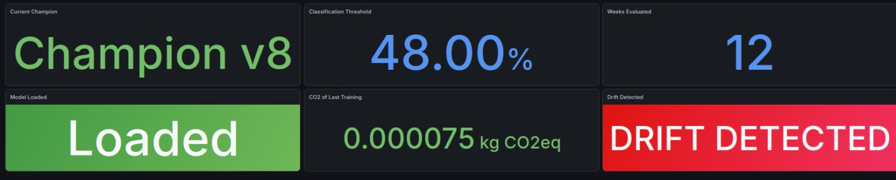

Services
Predict API + Train API + exporters
trafic · drift · performance · carbone
Métriques, logs et alertes convergent dans Grafana pour expliquer l'état de la production.
trafic · drift · performance · carbone
scrape toutes les 30 secondes
dashboards + alertes
